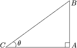

數…數學
「數」的發展
自然數
人類最初很自然用來數數量的正整數，就叫自然數，例如：1、2、3、4、5、6…。
但東西並不會從 0 開始數，所以最早並沒有零的概念，也不是自然數。
零
人類開始思考數目所象徵的哲理，而出現零的概念，用來表示沒有或無的意思，但有重新定位的功能，例如進一個位數。
負數
一些不符合自然現象的數目計算結果，但卻成立的數，例如負三個蘋果。
分數
對個體進行分割的概念，例如：三分之一、四分之三。
無理數、有理數
有些情況無法以整數切割成分數，例如直角三角形的斜邊長。於是發展出兩個分數之間的數，稱之為無理數。後來使用方根符號來表現。
既然有了無理數，就把之前的分數相對稱為有理數。
虛數、實數、複數
有人發現，過去的「數」，經過平方不是零就是正數。為了有個「數」能夠平方後變成負１，而創造出虛數的概念。
根號負 1 稱為虛數單位，以 i 來表示，a+bi 的形式稱為複數。
既然有了虛數，就把之前的有理數和無理數相對稱為實數。
其它
質數：除了 1 和自己無法被其他數整除。這種數被認為是整數的基本元素。
指數：an = x，計算 a 乘以 n 次的結果。
對數：log ax = n，計算 a 要變成 x 需要乘幾次。
數列：有順序的數字排列。
級數：將數列以 + 連接起來的式子。
因數、倍數：假設 m 能整除 n，則稱 m 是 n 的因數，反過來 n 是 m 的倍數。
質數
因為 1 在乘法中可以無限出現：1 * 1 * 1 ... * 3，所以 1 在質數列中沒有意義，不被視為有效質數。（在質數的定義上也不成立，質數應該有 1 和自己兩個因數才成立， 1 只有一個因數。）
2 是唯一偶數的質數
非質數的數稱為合數，合成數的意思。
量
「數」加「單位」成為「量」。
四則運算
先乘除，後加減。
數字的計算其實只有加法和減法，乘法與除法是加法與減法的蜜糖。因此遇到乘法與除法時，必須先行計算，還原為加法與減法的計算結果後，再繼續與加法和減法計算。
代數方程式基本公式
2 + x 之類的式子叫做一元一次方程式，2 + x - y 之類的式子，叫做二元一次方程式，2 * x + x 之類的式子，叫做一元二次方程式…依此類推。
這種式子在數學領域叫做代數。
代數方程式可以省略乘法符號，例如 2 * x 可以寫成 2x。
合併法則
ax+bx = (a+b)x
分配法則
(a+b)x = ax+bx
也就是合併法則倒過來。
拆括號法則
a+(b-c) = a+b-c
a-(b-c) = a-b+c
括號前為 +，括號內正負號不變。
括號前為 -，括號內正負號相反。
方程式的轉換
一次方程式與二次方程式，都有直觀的公式可以求解，例如用驗算的方式求解。三次方程式與四次方程式雖然也有公式，但求解方法很麻煩，例如畫座標圖或幾何學。五次以上方程式則是沒有固定求解公式。
為了方便求解，可將三次以上的方程式，拆解或合併為二次或一次方程式，可用嘗試的手段有「多項式」「乘法公式」「因式分解」。
但還是有可能嘗試不出來，這時再求 f(x)=0 的有理根方式轉換式子，不過這不在本節討論範圍。
指數定律
| am*an = am+n | |
| am/an = am-n | |
| (a*b)n = an*bn | |
| (a/b)n = an/bn | |
| a0 = 1 | a 不等於 0 |
| a-n = 1/an | a 不等於 0 |
多項式
兩個多次方程式，若結構相同，可以進行加減乘除計算，合併成一個代數方程式，這種式子的計算就叫做多項式。
乘法公式
用來將式子展開，最主要的結構其實是方程式基本公式的分配法則，但改稱為「分配律」：
(a+b)(c+d) = ac+ad+bc+bd
由此導出如下公式：
| (a+b)2 = a2+2ab+b2 | 即 (a+b)(a+b) = aa+ab+ba+bb 的寫法。 |
| (a-b)2 = a2-2ab+b2 | 即 (a-b)(a-b) = aa-ab-ba+bb 的寫法。 |
| (a+b)(a-b) = a2-b2 | 分配律為 aa-ab+ba-bb，其中 -ab+ba=0 相抵銷，剩 aa-bb。 |
| (a+b)(a2-ab+b2) = a3+b3 | => aa2-aab+ab2+ba2-bab+bb2 => a3-a2b+ab2+a2b-ab2+b3 => 其中 -a2b + a2b 相抵銷，+ab2 - ab2 相抵銷， => 剩 a3+b3。 |
| (a-b)(a2+ab+b2) = a3-b3 | => aa2+aab+ab2-ba2-bab-bb2 => a3+a2b+ab2-a2b-ab2-b3 => 其中 +a2b + -a2b 相抵銷，+ab2 + -ab2 相抵銷， => 剩 a3-b3。 |
因式分解
將多項式表示成幾個質因式的連乘積，稱為因式分解，可用來化簡分式。
最主要的結構是方程式基本公式的合併法則，但改稱為「提出公因式」：
ab+ac = a(b+c)
由此導出下面公式：
| ac+ad+bc+bd = (a+b)(c+d) | => 因為 ac+ad + bc+bd 可以拆出兩個公因式： => a(c+d) + b(c+d) => 其中 (c+d) 也是公因式可以提出，所以變成： => (c+d)(a+b) |
三角函數
相同銳角的直角三角形，即使大小不同，三邊長度比例卻是一樣的。根據這個特性，只要套用某銳角直角三角形的比例值，就能求得某一邊的長度、或者某一端點的座標值。

AB : BC 的比例，函數名稱取為 sin，發音是 sine，中文叫做正弦。
AC : CB 的比例，函數名稱取為 cos，發音是 cosine，中文叫做餘弦。
BA : AC 的比例，函數名稱取為 tan，發音是 tangent，中文叫做正切。
CA : AB 的比例，函數名稱取為 cot，發音是 cotangent，中文叫做餘切。
BC : CA 的比例，函數名稱取為 sec，發音是 secant，中文叫做正割。
CB : BA 的比例，函數名稱取為 csc，發音是 cosecant，中文叫做餘割。
從斜邊開始畫線為割（secant），在斜邊結束畫線為弦（sine），畫的線沒有斜邊為切（tangent）。[1]往銳角走為正，遠稅角而去為餘（co-）。
但重點不是 sin、tan、sec 的名稱與涵義，而是看到 sin 就表示高度（AB）與斜邊（BC）的比例、看到 tan 就表示高度（BA）與底部（AC）的比例、看到 sec 就表示斜邊（BC）與底部（CA）的比例…
來看例子，有個銳角 30 度的直角三角形，AB 是 100，BC 是 200，AB:BC 的比例就是 100/200=0.5，所以記作 sin(30) = 0.5。各個銳角的直角三角形，三邊長度的比例早已被計算出來，畢竟早在數千年前就發現直角三角形有這特性，所以我們直接查表或按計算機即可。
只要知道銳角角度與其中一個線段，就能按照比例，推算出另一個線段。再以銳角 30 度的直角三角形為例，若知道斜邊為 200 公分，就能以 sin(30) * 200 的算式，得到高度為 0.5 * 200 = 100 公分。以此需求整理三角函數的用法如下：
用底求高 → tan(角度) * 底
用邊求高 → sin(角度) * 邊
用高求底 → cot(角度) * 高
用邊求底 → cos(角度) * 邊
用底求邊 → sec(角度) * 底
用高求邊 → csc(角度) * 高
樂透彩頭獎機率計算式
大樂透
頭獎一組，號碼 49 選 6：
1/((49*48*47*46*45*44)/6!)
=1/((49*48*47*46*45*44)/(6*5*4*3*2*1))
=1/13983816
大約一千四百萬分之一的機率會中頭彩。
威力彩
頭獎一組，號碼 38 選 6，還要 8 選 1：
1/((38*37*36*35*34*33)/(6!)*(8/1))
=1/22085448
大約兩千兩百萬分之一的機率會中頭彩。
遭雷擊
依統計學研究全球每年被雷打到的人數，得到機率是五十萬分之一。